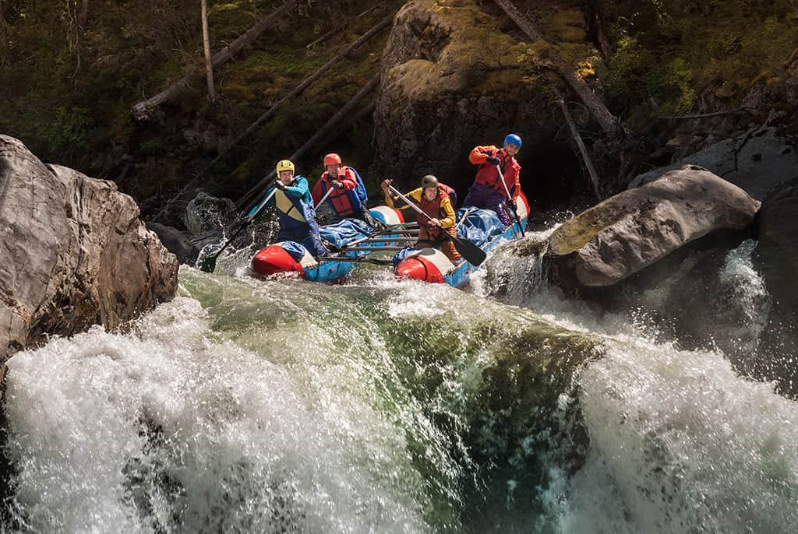

Whitewater rafting is an exhilarating adventure sport that combines thrill with natural beauty. Paddlers navigate through rushing rivers and challenging rapids, experiencing the raw power of water. This exciting activity demands teamwork, skill, and courage as groups work together to conquer varying difficulty levels. From beginner-friendly rivers to extreme professional runs, whitewater rafting offers unforgettable experiences. Participants enjoy spectacular canyon views, wildlife encounters, and personal achievement. Whether seeking adrenaline rushes or peaceful paddling through scenic landscapes, whitewater rafting provides the perfect escape from daily routines and connects adventurers with nature's magnificent forces.